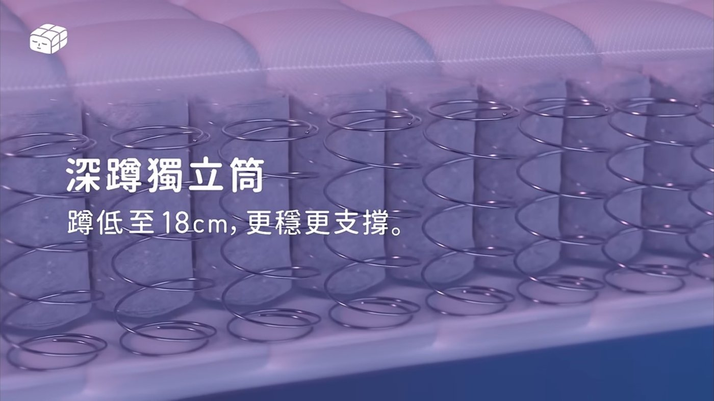

有人總是發揮亮眼，每場表現都在水準之上；有人上場時間不多，但態度從不打折；有人默默組織著全隊大小事；有人在場上奔馳多年，絲毫不減熱愛。
我們打電話給 9 位候選人的隊友，問他們：隊上最放心、最不能沒有的人，到底是什麼樣子？點開每一位，聽聽隊友怎麼說，再投下你的一票。
presented by 眠豆腐 Sleepy Tofu
眠豆腐採用深蹲獨立筒設計，每一顆彈簧都能隨著壓力獨立運作：受力時向下支撐，釋放時提供回彈。年度穩定先生的得主，將獲得眠豆腐準備的一張最穩定的床。

年度穩定先生大獎眠豆腐「一張最穩定的床」，尺寸任選
認識眠豆腐點選頭像，翻開他的故事
投票期間 11/12（四）至 11/22（日）23:59｜IG、Threads 每個帳號各限投一票｜11/28 全國總決賽現場揭曉｜有效留言中，IG、Threads 各抽一位幸運粉絲送眠豆腐抱枕